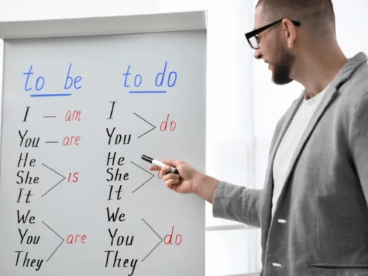
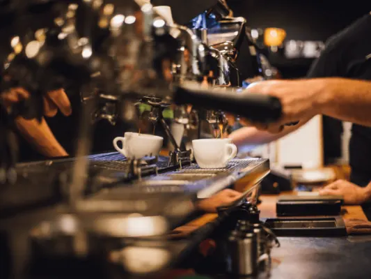

Gids
Cursussen in Nijmegen
Je bent nooit uitgeleerd. In Nijmegen, met de Radboud Universiteit, de HAN en tientallen kleine opleiders, kun je van alles leren: een nieuwe taal, een ambacht of een creatieve hobby.
Op deze pagina staan al onze cursusgidsen bij elkaar, met aanbieders in de stad.
Talen leren
Voor werk, studie, vakantie of inburgering.

Ontdek Spaans Leren in Nijmegen: De Beste Cursussen
Ben je gefascineerd door de Spaanse taal en cultuur en op zoek naar de beste manier om Spaans te leren in Nijmegen? Dan ben je op de juiste plek! In dit…

Waarom een Cursus Frans in Nijmegen Kiezen?
Cursus Frans in Nijmegen Nijmegen is een uitstekende keuze voor het volgen van een cursus Frans. Of je nu een beginner bent of je vaardigheden wilt…

Vind uw Cursus Engels in Nijmegen: Taal Succes!
Op zoek naar een cursus Engels in Nijmegen? Of u nu uw taalvaardigheid wilt verbeteren voor werk, studie, of persoonlijke ontwikkeling, Nijmegen biedt een…

Taalles Nijmegen – Alle ins and outs
Taal is van onschatbare waarde in onze samenleving. Zonder taal zouden we ons niet kunnen uitdrukken en geen informatie kunnen overbrengen. Wil jij graag…

Inburgeringscursus: Alles wat je hierover moet weten
Wanneer je vanuit het buitenland in Nederland komt wonen voor langere tijd, ben je verplicht om een inburgeringscursus te volgen. Hierbij leer je de…
Creatief en ambacht
Met je handen bezig zijn en iets moois maken.

Top 5 Cursussen Edelsmeden in Nijmegen: Vind Jouw Creatieve Spark
Ontdek de Kunst van Edelsmeden in Nijmegen Ben je gefascineerd door de wereld van edelsmeden en wil je je eigen sieraden maken? In Nijmegen vind je een…
Houtbewerking Meesteren: Cursussen in Nijmegen
Welkom in de wereld van houtbewerking in Nijmegen, waar ambacht en creativiteit samenkomen. Of je nu een beginner bent of je vaardigheden wilt…

Fotografie Workshops Nijmegen
Welkom in de wereld van fotografie in Nijmegen, waar cursussen en workshops je meenemen op een creatieve reis door de lens van je camera. De…

Barista Training in Nijmegen: Word Koffie Expert
Welkom in de Wereld van Espresso en Latte Art Nijmegen, een stad rijk aan geschiedenis en cultuur, biedt nu de unieke kans om de geheimen van koffie te…
Hobby en ontwikkeling
Voor jong en oud, en ook voor je hond.

Puppy Cursus in Nijmegen: Train Je Hond!
Begin het Avontuur met je Puppy in Nijmegen: Ontdek de Beste Puppy Cursussen Welkom in de wereld van puppy-opvoeding in Nijmegen, waar nieuwe…

7 Populaire Hobby’s voor Senioren in Nijmegen
Nijmegen, met zijn rijke cultuur en prachtige landschappen, biedt senioren een scala aan hobby’s om van te genieten. Of u nu op zoek bent naar een…

De beste dansscholen in Nijmegen
Dansen is weer helemaal hip. Jongeren, dertigers, ouderen en koppels: steeds meer mensen gaan op dansles. Het is gezellig, uitdagend en ook nog eens…

Welke nieuwe vaardigheden ga jij leren dit jaar?
Door een cursus te volgen kun je nieuwe kanten van jezelf ontdekken of je sterke punten verbeteren. Het is korter dan een opleiding en wat je leert is…

Eindeloos & betaalbaar leren? Ontdek deze opties!
Je bent nooit uitgeleerd, ook in Nijmegen kun je nog eindeloos veel leren! Wat is er leuker dan je bestaande kennis of vaardigheden uit te breiden met een…
Andere gidsen: wonen, leren en werken
Opleiders in Nijmegen
 UitgelichtDe Opstap - Het cursuscentrum in NijmegenCipresstraat 154, 6523 HR Nijmegentaalcursusmuzieklescreatieve cursusvolwassenenBekijk aanbodGitaarstudio NijmegenRichard Holstraat 7, 6523 AE NijmegenmuziekleskinderenvolwassenenproeflesHands On Tao Shiatsu InstituteStaddijk 41, 6537 TW Nijmegenvolwassenenproeflescertificaat of diplomaonline of op afstandWiskundebijles NijmegenVoorstadslaan 38, 6541 SR Nijmegenbijles en huiswerkbegeleidingonline of op afstandAula Taleninstituut NijmegenZwanenveld 6145, 6538 PX Nijmegentaalcursusvolwassenenzakelijke klantenonline of op afstandNederlands de BaasCouwenbergstraat 143, 6535 RX Nijmegentaalcursusvolwassenenparticulierenzakelijke klantenKoulounbaSprengenweg 2, 6541 BZ NijmegenbedrijfsuitjegroepenconcertenJe Ontwikkeling - Jouw Partner In Digitaal LerenSpoorstraat 30A, 6511 AH Nijmegenzakelijke klantengratis kennismakingonline of op afstandLindenberg CultuurhuisRidderstraat 23, 6511 TM Nijmegenmuzieklescreatieve cursuskinderenvolwassenen
UitgelichtDe Opstap - Het cursuscentrum in NijmegenCipresstraat 154, 6523 HR Nijmegentaalcursusmuzieklescreatieve cursusvolwassenenBekijk aanbodGitaarstudio NijmegenRichard Holstraat 7, 6523 AE NijmegenmuziekleskinderenvolwassenenproeflesHands On Tao Shiatsu InstituteStaddijk 41, 6537 TW Nijmegenvolwassenenproeflescertificaat of diplomaonline of op afstandWiskundebijles NijmegenVoorstadslaan 38, 6541 SR Nijmegenbijles en huiswerkbegeleidingonline of op afstandAula Taleninstituut NijmegenZwanenveld 6145, 6538 PX Nijmegentaalcursusvolwassenenzakelijke klantenonline of op afstandNederlands de BaasCouwenbergstraat 143, 6535 RX Nijmegentaalcursusvolwassenenparticulierenzakelijke klantenKoulounbaSprengenweg 2, 6541 BZ NijmegenbedrijfsuitjegroepenconcertenJe Ontwikkeling - Jouw Partner In Digitaal LerenSpoorstraat 30A, 6511 AH Nijmegenzakelijke klantengratis kennismakingonline of op afstandLindenberg CultuurhuisRidderstraat 23, 6511 TM Nijmegenmuzieklescreatieve cursuskinderenvolwassenenHeb je zelf een opleider? Kom hier als partner te staan.
Veelgestelde vragen
Kan ik ook 's avonds een cursus volgen in Nijmegen?
Ja, veel taalcursussen en creatieve workshops worden 's avonds of in het weekend gegeven, juist voor mensen die overdag werken.